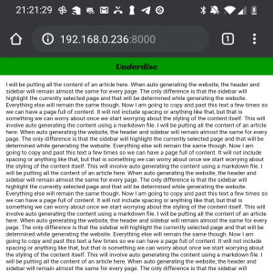
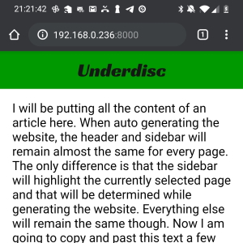

Learning More About Web Development
Around two to three years ago, I was making my way through college and would soon be entering the job market as a game programmer. In order to land a job, I was going to need a website to display my previous work. I had no desire to use a service like Squarespace, Wordspace, etc. I was more excited about creating my own website and the challenges that come along with that. Wanting this eliminated Jekyll as an option too.
I found out about github pages for hosting static websites. This would take care of hosting and I needed nothing more than a static website. That means I could focus purely on the work that goes into creating a webpage.
The first step to doing this involves learning about HTML and CSS. When I first made my website, I only made use of the two. They were enough to get something quite basic created, but I didn't use them to their full power. I tried to make a layout that would work on both mobile and desktop that wouldn't require any layout changes for different platforms. Those words sound great, but when I looked at the site I made after letting it sit around for two years, I knew this was no longer going to cut it.
This is the layout that would be used for every device. The image at the top would expand to fill the full width of the screen. When the window was stretched far enough, the image would take up the entire browser window. The top navigation bar always stayed the same. It would consistently be four evenly spaced boxes lined up horizontally. On small broswer windows, these options were clumped together. It wasn't pleasant to look at and there were certainly other problems, but it was usable. The issue is that I built it for the browser window I was testing against first and everything else second. I still keep the old page up here for reference. The links are not broken as of this writing, but they will likely break in the future as stuff is cleaned out from the old and moved to the new. The home page will always stay there though.
I don't like it, but it did do its job. It helped me secure a position at a studio I was intersted in working at. Time has moved on though. I just recently left that job with the goal of pursuing my own work and I need a place to share that work. Because of my dislike for the original site, the first task after leaving has been rebuilding the entire thing from scratch. What you are looking at now is the current iteration of that overhaul. Despite a few minor details that would be nice to have solved in the future, I am proud of it.
For the rebuild, my main goals involved fixing the biggest grievances I had with my previous work. When I recalled working on my old website, these are the major problems that quickly came to mind.
- A layout that doesn't react to window size changes..
- Editing HTML files directly to add and edit content on the website.
With those in mind, I went off to work.
Layout
I needed to make something that would handle mobile and desktop well. When addressing that I came across CSS media queries. They are explained in more detail in that link, but they are essentially a directive added to a style sheet to apply changes to css properties if a certain condition is met. For example, the media query I use on this website for identifying if the platform is mobile is this.
@media screen and (max-width: 70em) {
...
}
This just means if the browser window size is less than or equal to 70em, then the changes within the curly braces are applied. The changes specified within the media query use the same syntax as everything else in CSS. As an example, here is a full style sheet with a media query.
div.a {
background-color: black;
}
@media screen and (max-width: 500px) {
div.a {
backgound-color: white;
}
}
By default, the background color of div.a will be black, but if the browser screen size is less than or equal to 500px, the background color of div.a will become white. You can see this sort of dynamic behavior in action if you just decrease the width of your browser window while on this page. The window will eventually be small enough that the layout will change to mobile mode.
Media queries were a nice start to what I was looking for to handle my specific use case, but I was also keen on having a dropdown menu on mobile so it wouldn't take up space when it wasn't needed. CSS has built in features for handling dropdowns, but I only came across the potential for on hover dropdowns and never on click dropdowns. For that, I would need to take my first dive into javascript.
function ToggleDropdown()
{
...
}
dropdown_button.addEventListener('click', ToggleDropdown);
The process of creating the dropdown for the mobile mode was pretty straight forward. When the dropdown button is clicked and not in motion, the dropdown will either slide into view or out of view over a short period of time. This action also results in moving all the content of the page as well. Instead of having the dropdown hide the top of the page content, I wanted to have the content remain visible at all times, even though the bottom would still slide out of view.
function ToggleDropdown()
{
//...
// All time values are expressed in milliseconds.
const animation_time = 250;
const frame_time = 10;
let animation = setInterval(step, frame_time);
dropdown_in_motion = true;
const start_time = new Date();
function step()
{
let current_time = new Date();
let time_passed = current_time - start_time;
if (time_passed >= animation_time)
{
dropdown_in_motion = false;
sidebar.style.bottom = end_pos + 'px';
content_container.style.bottom = end_pos + 'px';
clearInterval(animation);
return;
}
let t = time_passed / animation_time;
let t_quad_in = -1.0 * (t - 1.0) * (t - 1.0) + 1.0;
let current_pos = start_pos + dist_pos * t_quad_in;
let current_rot = start_rot + dist_rot * t_quad_in;
sidebar.style.bottom = current_pos + 'px';
content_container.style.bottom = current_pos + 'px';
dropdown_button.style.transform = 'rotate(' + current_rot + 'deg)';
}
}
This was the method I ended up rolling with to accomplish this. The content and sidebar containers have position: relative set and that allows me to change the positions of the elements dynamically using the bottom property. This is just the distance the element is from its bottom edge.
To actually calculate this distance, I use the linear interpolation parameter t. As the animation goes from start to finish, this value will move from 0 to 1, getting closer to 1 during every step of the animation. That parameter, which is calculated based off the amount of time passed since the beginning of the animation, is used to to determine how far the element should be from its starting position. At t = 0 the element hasn't moved and when t = 1 the element will have moved all the way to the end position.
let t_quad_in = -1.0 * (t - 1.0) * (t - 1.0) + 1.0;
This statement just changes how t scales as it goes from 0 to 1. In this case, t_quad_in will change quickly at the beginning of the animation and slowly at the end of the animation. If you were to graph this function t_quad_in = -1 * (t - 1)^2 + 1 you may notice it's just an upside down parabola centered at (1, 1). That's what's responsible for this type of motion and it's usually referred to as an ease type. I will leave this particular topic here for now, because I can talk about these types of transformations for days. I like calling them Actions, and I'll definitely write about them when I go to implement them in my engine in the future.
While getting this animation to work, I was constantly testing the website on my phone by hosting it locally with python -m http.server. There was something very strange about the site when viewed on mobile though. The font was ridiculously small and things just didn't seem to be scaled properly on mobile in general. That's when I came across this.
<head>
<meta name="viewport" content="width=device-width, initial-scale=1"/>
</head>
Despite not seeing this mentioned almost anywhere except for a stack overflow post, this one line is extremely important. The purpose of this element is described in detail here. In short, when a webpage is rendered on mobile, it's actually rendered to something larger than the display that it's being rendered to. The content is then scaled down to fit on the display. The HTML above changes that so the website is actually rendered using the correct display width. This has a huge impact on the page's scaling for mobile devices. Here is a before and after picture of this website as an example.


That sums up most of the work done to create the website so that it works on multiple platforms. I skipped over some things: how the header bar and side bar were constructed using display: grid and how I handled widescreen browser windows, but I could write for much longer if I covered everything. Once I had the bulk of this layout work done, my next task involved finding a way to edit and add content to the website without ever needing to touch an HTML file.
Automated Building
Before researching anything related to this task, I already had an idea of what I was looking for. The main task was finding what I needed and using it. I didn't know all the details, but I did know markdown is a very common syntax that allows for aesthetic content sytling. Github uses markdown syntax for styling the readme document that is displayed on every repository's home page. I've used it many times before and just thinking about making my whole website using markdown files got me a little giddy. It turns out it's pretty easy.
The first thing I went searching for was a markdown to HTML converter. With that covered, I could have a single template HTML file that contains all the elements used for the website's overall layout style. Then I could insert some HTML that has been converted from markdown into a container element within that template for the page content and generate a page for the website. I was very pleased to come across Showdown. It takes care of the markdown to HTML conversion process and I take care of the rest.
function RenderMarkdown(inputFile, destination, rebuild)
{
// ...
// Render the markdown document to html.
let markdown = fs.readFileSync(inputFile, 'utf8');
let html = converter.makeHtml(markdown);
let content_div = '<div class=\'page_content\'></div>';
template('div.content_container').append(content_div);
template('div.page_content').append(html);
// ...
}
RenderMarkdown('index.md', '../', rebuild);
RenderMarkdown('blog.md', '../', rebuild);
RenderMarkdown('projects.md', '../', rebuild);
The process is this: read the markdown file, convert it to HTML, and insert it into the page's content container. If you're wondering why there is another wrapper around page_content called content_container, it has to with the different styling used for the two elements. I forget why I added it into the generation step instead of baking it into the template HTML directly though…
You probably noticed the template('...') syntax. It's from a package called cheerio that takes a lot of inspiration from jQuery. I have never used jQuery, but I came across cheerio while looking for ways to parse and edit the template HTML file that I use to generate every page. cheerio allows for that sort of dom editing using Node.js instead of running on the client.
let template = cheerio.load(templateHtml);
And that leads to the next thing. You might be wondering why I am using Node.js if I am using Github Pages. Github Pages only allows for static hosting and that means I can't run any of my code on the server that's actually hosting the website. I don't know how common this is because I am not well versed in web development, but I am using Node.js purely locally here. I have a single script called build.js that builds all the HTML files for the website and puts them in the correct directories. I am essentially using it the same way most would use python. It's just a script that gets some work done.
When working on this generation step, I encountered one problem that I anticipated, but never found a pretty solution to. Like I said before, there is one template HTML file that acts as the template for every HTML file. It's this. This template file contains multiple links to other local files.
<link class="main_style" rel="stylesheet" href="main_style.css">
<link class="hljs_style" rel="stylesheet" href="hljs_style.css">
<script class="main_script" type="text/javascript" src="main.js"></script>
<!-- ... -->
<a class="sidebar_element index_link" href="index.html">Home</a>
<a class="sidebar_element blog_link" href="blog.html">Blog</a>
<a class="sidebar_element projects_link" href="projects.html">Projects</a>
This presents a problem when placing HTML files in directories deeper than the website's root directory. For example, this file (the one you're currently reading) is one directory deeper than the root. That means the file paths in the HTML above will no longer refer to an existing location without being corrected to point to the files in the website's root.
function CorrectLink(html, selector, attribute, correction)
{
let linkElement = html(selector);
let filePath = linkElement.attr(attribute);
filePath = correction + filePath;
linkElement.attr(attribute, filePath);
}
let depth = GetOccurrenceCount(inputFile, '/');
if(depth > 0)
{
let linkCorrection = '';
for(let i = 0; i < depth; ++i)
{
linkCorrection += '../'
}
CorrectLink(template, 'link.main_style', 'href', linkCorrection);
CorrectLink(template, 'link.hljs_style', 'href', linkCorrection);
CorrectLink(template, 'a.index_link', 'href', linkCorrection);
CorrectLink(template, 'a.blog_link', 'href', linkCorrection);
CorrectLink(template, 'a.projects_link', 'href', linkCorrection);
CorrectLink(template, 'script.main_script', 'src', linkCorrection);
}
I fixed this by doing exactly that. Every time a markdown is rendered to HTML, the links contained in the template HTML are edited to point to the correct paths. The exact editing that needs to be done is dependent on where the HTML file ends up. This is why I search for the number of / occurrences there are in the markdown file path. The location and structure of all the markdown files is one-to-one with where they end up when they are built for the website.
I wish there were a better solution to this because what I wrote is a bit ugly and doesn't seem very necessary. It would be nice if there were some way to specify the root and every link in HTML files in or below that root would begin at that root. It would remove the need to perform this link shenanigan, but at the same time such a thing doesn't seem easily doable and would likely result in a different kind of mess. What I am trying to say is, I think this a problem and I have no idea how I would solve it.
The last task on my agenda was getting syntax highlighting for any code snippets I include in my markdown documents. What is code if it hasn't been puked on by unicorns, right? Again, I went searching around the internet for a solution because code highlighting on websites is extremely common and I came across highlight.js.
When I first started to use highlight.js, I figured I could just take the HTML output from Showdown, get all existing <pre><code>...</pre><code> blocks, send the block's content through highlight.js to add the HTML tags for syntax highlighting.
template('pre code').each(function(i, domElement)
{
// ...
let code = template(this).html();
let highlightedCode = hljs.highlight(lang, code).value;
template(this).parent().replaceWith('<pre><code>' + highlightedCode);
});
Unfortunately, this didn't work. One important detail about pumping markdown through Showdown is that it will convert some characters to their corresponding HTML representations. For example, ' gets converted to ' and & gets converted to &. As you might imagine, code often contains those characters along with many others. So when Showdown performed the conversion and I gave a code string to highlight.js, a lot of the syntax highlighting was broken because of these character replacements. The syntax highlighting needed to be performed before showdown converted those characters.
You're probably hoping for an eloborate solution to this problem. Well, sorry to disappoint, but this took care of that work. With that package, all I needed to do was add the extension when initializing showdown and everything was taken care of.
const showdown = require('showdown');
const showdownHighlight = require('showdown-highlight');
const converter = new showdown.Converter({extensions: [showdownHighlight]});
Once I had that working, the bulk of everything I wanted to do with the redesign was complete. I am still continuing to work on the styling of certain elements as well as improving the build process so I have to do less work in the future as I add content to the website. This will be a continuous project as time goes on though. I intend on posting on this website as I work on my projects. As I find new things to post and come across other problems, I will be adding and fixing things on the site. For now though, I have a solid base. All I have to do is edit and add markdown files, run node build.js and the website's HTML files will be updated according to the markdown changes made. Who knew being this lazy could be this exciting?
Some Other Small Problems
Though most of the work is done, I still have issues with certain parts of the website. One big grievance of mine is the size of code boxes on mobile. I would love to have all code boxes be at least 80 characters wide, but I haven't found a feasible way to do it. The font used for code must remain monospace and it must be a readable size. I could exchange the font for a font with a smaller character width, but that means I need to add a custom font with that property. It might not be much, but that's more resources to load for the website to render. Additionally coming across such a font that would allow for lines that long on mobile would be a challenge on its own. I also considered expanding the width of the code boxes to take up the entire width of the content box, but when I looked at how much space that would add, it was less than 10 characters. I also like the current style of the code boxes, so I am not set on changing that for such a minor benefit. For now, horizontal scroll bars make the code accessible and that hits at least the minimum bar.
Another issue is that I need to add a line to the build script every time a new markdown file is added. It's just like adding file names to cmake in a build process. This is not a big deal and I will fix it as soon as I get annoyed while adding lines to the build script. When I do fix it, I will likely have the build script convert all the markdown files in certain directories. That way I can just add markdown files to those directories and they will automatically be built.
PS
I hope this first post isn't too all over the place. While writing this, I was constantly testing new things and changing the style of various content elements. So, while this is my first post, it's more akin to a high effort test. If you've made it this far though, thanks for reading about the shit I work on. I appreciate you.